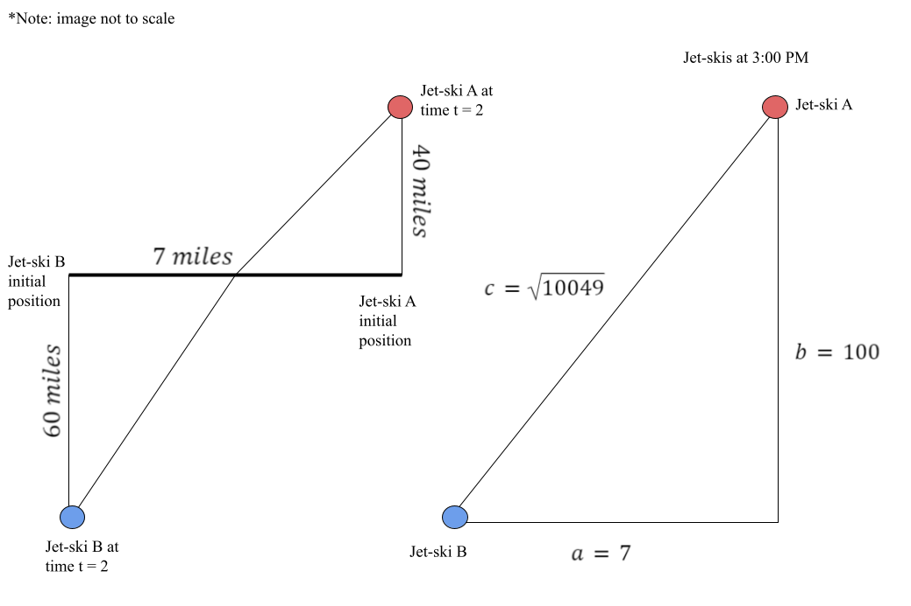
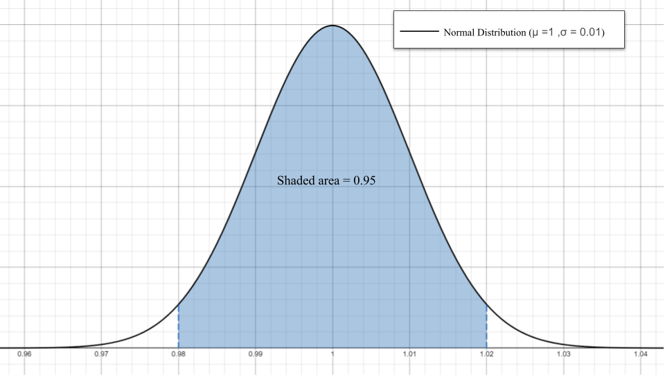
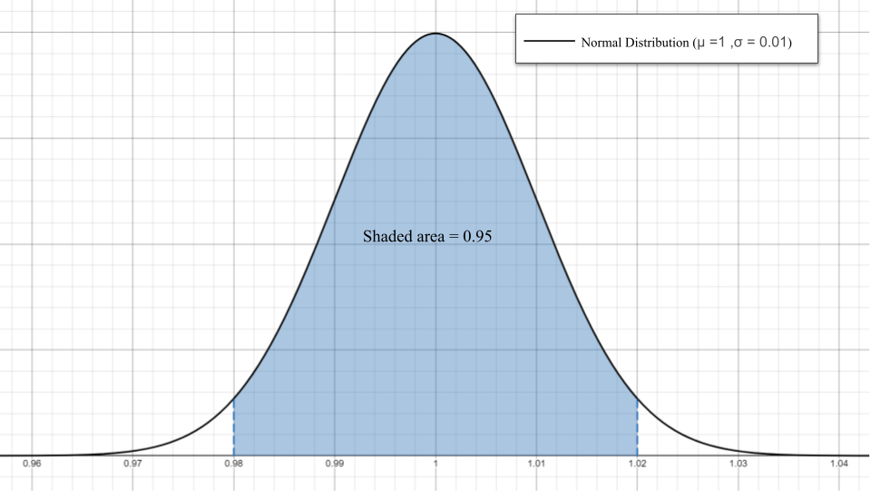

Show code cell source
import pandas as pd
import numpy as np
import matplotlib.pyplot as plt
import math
7.14. Solutions to Exercises#
7.14.1. Linear Systems and the Two-Commodity Model#
1. Let \(x\) be the units of necessities and \(y\) the units of luxuries. Then \(30x+100y=4000\) and \(y=\frac{1}{10}x\). This implies that \(40x=4000\) so \(x=100\) and \(y=10\).
2. A \(10\%\) decrease in budget gives \(30x+100y=3600\) with \(y=\frac{1}{10}x\). The equilibrium bundle is \(x=90\), \(y=9\). A \(10\%\) increase in unit prices gives \(33x+110y=4000\) with \(y=\frac{1}{10}x\) so \(x=90.9\) and \(y=9.09\). So a decreased budget results in a greater loss of buying power.
3. A \(10\%\) increase in budget gives \(30x+100y=4400\), \(y=\frac{1}{10}x\). The equilibrium bundle is \(x=110,y=11.\) A \(10\%\) decrease in prices gives \(27x+9y=4000\), \(y=\frac{1}{10}x\). The equilibrium bundle is \(x=111.1,y=11.1\). So the decrease in prices has the greater gain in buying power.
4. The solid black line is the original budget. The other lines in order of increasing buying power are \(10\%\) decrease of income, \(10\%\) increase in prices, \(10\%\) increase in income, and \(10\%\) decrease in prices.
7.14.2. Marginal and Average Cost#
1.
Show code cell source
Q = np.linspace(1,8,100)
ATC= .5*Q**2-3*Q+12+50/Q #average total cost
MC=1.5*Q**2-6*Q+12 # second function
plt.figure(figsize=(8, 4))
plt.plot(Q,ATC,color='k',label="ATC")
plt.plot(Q,MC,color='r',linestyle=":",label="MC")
plt.xlim((0.,8))
plt.ylim((0,60.))
plt.grid()
plt.legend()
plt.show()
From the graph it appears ATC=MC at \(Q=5\). We can check this:
Finally, note that
At \(Q=5\), \(ATC'(5)= 5 - 3 - \frac{50}{5^2}=0\).
2.
Show code cell source
Q = np.linspace(0,8,100)
ATC= -10*Q**2+128*Q+12+3 #average total cost
MC=-30*Q**2+256*Q+4 # second function
plt.figure(figsize=(8, 4))
plt.plot(Q,ATC,color='k',label="ATC")
plt.plot(Q,MC,color='r',linestyle=":",label="MC")
plt.xlim((0.,8))
plt.ylim((0,600.))
plt.grid()
plt.legend()
plt.show()
The graph does not show clearly the value of \(Q\) at the intersection. Note that \(ATC'(Q)=-20Q+128=0\) when \(Q=6.4\).
We can check that \(ATC(6.4) = MC(6.4)=412.6\).
3.
\(ATC= TC/Q\), so by the quotient rule, \(ATC'(Q)=0\) when
This occurs when \(Q \cdot MC - TC=0\), or \(MC = \frac{TC}{Q}=ATC\).
7.14.3. Optimization and Object Design#
1.
a) 
b) \(h=\frac{250}{\pi x^2}\).
c) \(f(x)=2\pi x^2 + 500x^{-1}\).
d) \(f'(x)=4\pi x - 500 x^{-2}\)
e) \(x=(125/\pi)^{1/3}\)
f) \( h = 2 (125/\pi)^{1/3} = 2x\).
g) The height of the can and its diameter are equal. The can is ‘square-shaped’.
h)
When \(x = (125/\pi)^{1/3}\). \(f''(x)>0\), hence there is a minimum value for \(f\).
2. a) Volume \(V(h) = \frac{\pi}{3}(r^2h-h^3)\)
\(V'(h) = \frac{\pi}{3}(r^2-3h^2)=0\) when \(h= \pm \frac{r}{\sqrt{3}}\). (\(h\) must be positive)
\(V(\frac{r}{\sqrt{3}})= \frac{2\pi r^3}{9\sqrt{3}}\).
b) \(V''(h)=\frac{\pi}{3}(-6h)<0\) when \(h=\frac{r}{\sqrt{3}}\) so the volume is maximized.
c) The graph and code to make it are shown below:
Show code cell source
import matplotlib.pyplot as plt
import numpy as np
import sympy as sp
# Create a symbolic expression for the given equation
h = sp.symbols('h')
V = sp.lambdify(h, (np.pi/3)*(h - h**3))
h_vals = np.linspace(0,1,100)
# Plot f(x), L(x), and the point (a, f(a))
plt.plot(h_vals, V(h_vals))
plt.xlabel("h")
plt.ylabel("V")
plt.title("Paper Cone's Volume V as a Function of its height h")
plt.grid(True)
plt.axhline(0, color="black", linewidth=0.5)
plt.axvline(0, color="black", linewidth=0.5)
plt.show()
7.14.4. Optimization and Cobbs-Douglas Production#
1.
Solving the last equation for \(L\) gives \(L=120.8\).
The maximum production is \(Q=2(120.8)^{.4}(90.6)^{.6}=203.3.\)
Show code cell source
import matplotlib.pyplot as plt
import numpy as np
import sympy as sp
# Create a symbolic expression for the given equation
L = sp.symbols('L')
Q = sp.lambdify(L, 2*L**(.4) * (151-.5*L)**(.6))
Q_vals = np.linspace(0,250,500)
# Plot Q(L)
plt.plot(Q_vals, Q(Q_vals))
plt.xlabel("L")
plt.ylabel("Q")
plt.title("Optimal Production")
plt.grid(True)
plt.axhline(0, color="black", linewidth=0.5)
plt.axvline(0, color="black", linewidth=0.5)
plt.show()
2.
Note that \(TC''=\frac{200}{9}65^{5/3}L^{-7/3}>0\) so there is a minimum at \(L=77.25\).
\(K=65^{5/3}(77.246)^{-2/3}\approx 57.9346\).
The minimum total cost is \(10(77.246)+20 (57.9346)+20\approx 1951.15\).
7.14.5. Related Rates and Volumes#
1.

2. \(\frac{r_{cone}}{h_{cone}}=1/2\Rightarrow r_{cone}=\frac{1}{2}h_{cone}\)
3. \(v_{cone}=\frac{1}{3}\pi r_{cone}^2h_{cone}=\frac{\pi}{3}\frac{h_{cone}^2}{4}h_{cone}=\frac{\pi}{12}h_{cone}^3\)
4. \(\frac{d}{dt} [V_{cone}] = \frac{d}{dt} [\frac{\pi}{12}h_{cone}^3] = \frac{\pi}{4} h_{cone}^2 \frac{dh_{cone}}{dt}\)
5. \(v_{pot} = \pi r^2 h_{pot} = \pi 3^2 h_{pot} = 9\pi h_{pot}\)
6. \(\frac{d}{dt} [V_{pot}] = \frac{d}{dt} [9\pi h_{pot}] = 9 \pi \frac{dh_{pot}}{dt}\)
7. \(\frac{d}{dt} [V_{cone}] = -\frac{d}{dt} [V_{pot}]\)
8.
9. We assume the coffee flows out of the filter at a continuous rate.
7.14.6. Related Rates with Trig Functions and Football#
1. Using the Pythagorean theorem, we can create and label a triangle to represent the problem:

We are given \(\frac{db}{dt} = -20,\) but want to know what \(\frac{dc}{dt}\) is when \(b=45.\) Since the problem can be represented as a right triangle, we can further use the Pythagorean theorem and derivatives to solve for \(\frac{dc}{dt}.\)
We are given \(\frac{db}{dt} = -20\), but want to know what \(\frac{d\theta}{dt}\) is when \(b=45\). Using the triangle and trigonometric functions, we can solve for \(\frac{dc}{dt}\).
2. Using algebra to find the sidelength and the Pythagorean theorem, we can create and label a triangle to represent the problem:
{kind=link}
We are given \(\frac{db}{dt} = 50\), but want to know what \(\frac{dc}{dt}\) is when \(b=100\). Since the problem can be represented as a right triangle, we can further use the Pythagorean theorem and derivatives to solve for \(\frac{dc}{dt}.\)
7.14.7. Probability Distributions and Drive Thrus#
1. a) \(\int_0^2 e^{-t}\,dt = -e^{-t}\mid_0^2 = -e^{-2} - -e^{0} = 1 - e^{-2}\)
b) \(\int_0^\infty k e^{-t}\,dt = -e^{-t}\mid_0^\infty = \lim_{t\to\infty} -e^{-t} + e^{0} - -e^{0} = 0 + 1 = 1\)
c)
d)
e) \(F(3) = 1 - 0.5^{3} = 0.875\)
2. a)
b)
3.
7.14.8. Normal Distribution and Process Control#
1.
 

{kind=link}

2. a) \(100 \cdot 0.997 = 99.7%\)
b) \(100 \cdot (0.003 / 2) = 0.15%\)
c) \(99.7 + 0.15 = 99.85%\)
3. a)

b) Yes, 0.9825 and 1.0035
4.
{kind=link}
From the first derivative test, we can see that there is an absolute maximum at \(x = 1\). Generally, the absolute minimum is found at \(x = \mu\) for normal distribution functions.
From the second derivative test, we can see that there are inflection points at \((0.99, 24.197)\) and \((1.01, 24.197)\). Generally, the inflection points are found at \(x = \mu \pm \sigma\) for normal distribution functions.
7.14.9. Partial Derivatives and OLS Regression#
1. The plot and code to make it are shown below:
Show code cell source
plt.figure(figsize=(8, 4))
plt.xlim((0,4.2))
plt.ylim((0,4.2))
hs=[2.0,2.5,3.0,3.0,3.5,3.5,4.0,4.0]
col=[1.5,2.0,2.5,3.5,2.5,3.0,3.0,3.5]
plt.scatter(hs,col,color='r',marker='x')
plt.gca().set_xticks(np.arange(0,5,1))
plt.grid()
plt.xlabel("High School GPA")
plt.ylabel("College GPA")
plt.show()
2.
Solving the system gives \(m\approx .784\), \(b\approx .189\).
Show code cell source
plt.figure(figsize=(8, 4))
plt.xlim((0,4.2))
plt.ylim((0,4.2))
hs=[2.0,2.5,3.0,3.0,3.5,3.5,4.0,4.0]
col=[1.5,2.0,2.5,3.5,2.5,3.0,3.0,3.5]
plt.scatter(hs,col,color='r',marker='x')
#--plot the OLS regression line-----
m=.784
b=.189
xreg=np.linspace(0,5,50)
yreg=m*xreg+b
plt.plot(xreg,yreg,label="OLS Regression Line")
plt.gca().set_xticks(np.arange(0,5,1))
plt.grid()
plt.xlabel("High School GPA")
plt.ylabel("College GPA")
plt.show()
Solution to exercise 3
Since \(D>0\) and \(S_{mm}>0\), \(S\) is minimized.
Solution to Exercise 4
GPA |
|||
|---|---|---|---|
High School GPA: |
2.0 |
3.0 |
4.0 |
College GPA: |
1.76 |
2.54 |
3.3 |
7.14.10. Area between curves and the GINI index#
1.
Profession 1 has a slightly more even salary distribution.
2.
Show code cell source
plt.figure(figsize=(8, 4))
plt.xlim((0,1.))
plt.ylim((0,1.))
x=np.linspace(0,1,100)
f=x**1.7
g=x
plt.plot(x,f,color='r',label='L1(x)=x^1.7')
plt.plot(x,g,color='k',label='g(x)=x')
plt.fill_between(x,f,g,color='lightgray')
plt.grid()
plt.legend()
plt.xlabel("x")
plt.ylabel("y")
plt.text(.3,.7,"Shaded area A=.13")
plt.show()
Show code cell source
plt.figure(figsize=(8, 4))
plt.xlim((0,1.))
plt.ylim((0,1.))
x=np.linspace(0,1,100)
f=.8*x**2+.2*x
g=x
plt.plot(x,f,color='r',label='L2(x)=.8x^2+.2x')
plt.plot(x,g,color='k',label='g(x)=x')
plt.fill_between(x,f,g,color='lightgray')
plt.grid()
plt.legend()
plt.xlabel("x")
plt.ylabel("y")
plt.text(.3,.7,"Shaded area A=.135")
plt.show()
One further plot shows the two Lorentz curves nearly coincide.
Show code cell source
plt.figure(figsize=(8, 4))
plt.xlim((0,1.))
plt.ylim((0,1.))
x=np.linspace(0,1,100)
L1=x**1.7
L2=.8*x**2+.2*x
g=x
plt.plot(x,L1,color='r',label='L1(x)=x^1.7')
plt.plot(x,L2,color='b',label='L2(x)=.8x^2+.2x')
plt.plot(x,g,color='k',label='g(x)=x')
plt.grid()
plt.legend()
plt.xlabel("x")
plt.ylabel("y")
plt.show()
7.14.11. Integral Test and Income Streams#
1. The total at \(t=4\) will be
2.
Show code cell source
f = lambda t : (10000+500*t)*math.e**(.05*(4-t))
a = 0; b = 4; N = 4
n = 10 # Use n*N+1 points to plot the function smoothly
#right endpoint rule
t = np.linspace(a,b,N+1)
y = f(t)
T = np.linspace(a,b,n*N+1)
Y = f(T)
plt.figure(figsize=(5,5))
plt.gca().set_xticks([1,2,3,4])
plt.plot(T,Y,'r', linestyle =':')
t_right = t[1:] # right endpoints
y_right = y[1:]
plt.plot(t_right,y_right,'k.',markersize=10)
plt.bar(t_right,y_right,width=-(b-a)/N,alpha=0.1,align='edge',color='k',edgecolor='k')
plt.title('Right Rectangle Sum, N = {}'.format(N))
plt.xlabel('Time t investment of 10,000+500t dollars with interest')
plt.ylabel('Value of investment at t=4')
plt.text(1,12300,"f(t)=(10,000+500t)e^{.05(4-t)}",color='r')
plt.text(.3,11800,"A_1")
plt.text(1.3,11800,"A_2")
plt.text(2.3,11800,"A_3")
plt.text(3.3,11800,"A_4")
plt.ylim((11000, 12500))
#plt.grid()
plt.savefig('4 period.png')
plt.show()
3. Note that
4. Note that if we invest \(P_4\) at \(t=0\), this amount will grow by the end of year 4 to an amount \(e^{.05(4)}P_4\approx 48,561.10\). The latter amount is the area under the curve \(e^{.05 (4-t)}\) on the interval \(0\let\le 4\), which by problem 2) is greater than \(A_1+A_2+A_3+A_4\).
5.
7.14.12. Ordinary Differential Equations and Exponential Growth/Decay#
1. a) \(\frac{dy}{dt} = 5 - 0.01y\)
b)
Plug in \(y(0) = 100\) to find the value of C.
The final equation is \(y = 500 - 400e^{\frac{t}{-100}}\)
c)
The pollution level will become unsafe during the 138th day.
d)

2. We can prove the rule of 72 using the formula for compound interest, \(A = P(1 + \frac{r}{100})^t\), where \(A\) is the amount accumulated, \(P\) is the principal amount, \(r\) is the interest rate, and \(t\) is the time (in years) the money has been invested. We are trying to prove that \(t = \frac{72}{r}\) when \(A = 2P\).
The last few steps are done using the approximations \(0.693 \approx 0.72\) and \(\ln{1+x} \approx x\) for small values of x. We are able to do this as the rule of 72 is only an approximation.
3. \(t_h = - \frac{\ln{\frac{1}{2}}}{k} = \frac{0.693}{k}\)
4.
Now that we have the general solution, we can plug in \(y_0 = 5\) and \(t = 5\) to find the value of \(C\).
The final solution is